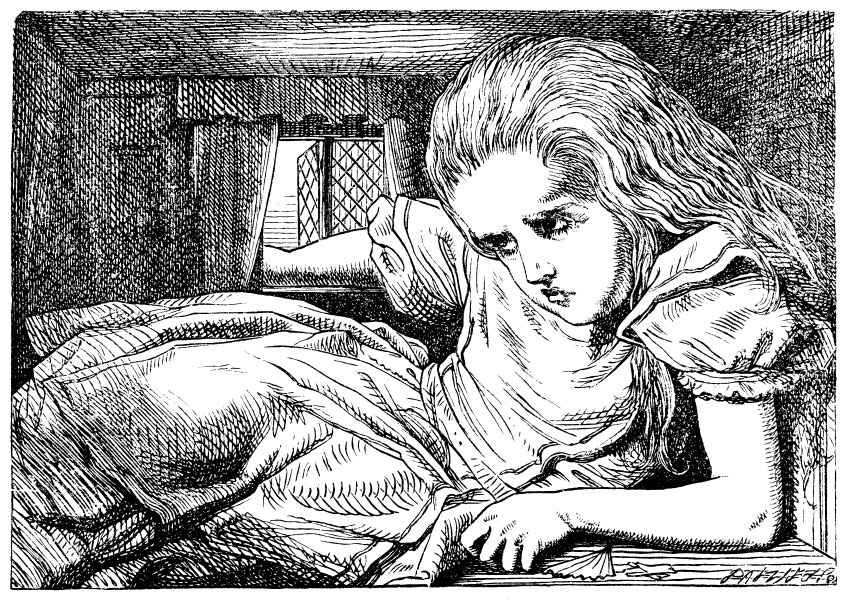

Gelen Beyaz Tavşan idi; sanki bir şey kaybetmişçesine bir yandan kaygıyla yerleri kolaçan ediyor bir yandan da yürüyordu. Alice, Tav-şan'ın bir şeyler mırıldandığını işitiyordu, “Düşes! Düşes! Ah, benim canım patilerim! Ah benim canım kürküm, bıyıklarım! Beni idam ettirecek, dağ gelinciklerine av olmaktan kurtulamayışımız kadar eminim bundan! Nerde düşürmüş olabilirim acaba onları? Alice, Tavşan’ın aradığı şeylerin yelpaze ve beyaz güderi eldivenler olduğunu anlamıştı. Yardımsever bir kız olduğundan hemen onları aramaya koyuldu, fakat görünürde yoktular, gölde yüzdüğünden beri her şey sanki değişmiş gibiydi, camdan masası ve küçük kapısıyla büyük salon büsbütün yok olmuştu.
Derken, Tavşan, yerleri arayıp duran Alice’i fark edip, öfkeli bir ses tonuyla, “Mary Ann, sen buralarda ne arıyorsun? Derhal eve koş ve bana bir çift eldivenle bir yelpaze getir! Çabuk ol!” diye bağırdı. Alice öyle bir korkmuştu ki, Tavşan’a kendisini başka biriyle karıştırdığını bile söyleyemeden, derhal işaret ettiği yöne doğru fırladı.
“Beni hizmetçisi sandı,” dedi kendi kendine, koşarken. “Kim olduğumu anladığında kimbilir nasıl da şaşıracak! Olsun, yine de yelpazesiyle eldivenlerini ona götürsem iyi olacak... Tabii bulabilirsem.” Alice, böyle konuşup durduğu sırada, kapısında parlak pirinç bir levha üzerine “B. Tavşan” yazılı minik, şirin bir eve vardı. Kapıyı çalmadan içeri girip, gerçek Mary Ann ile karşılaşır da yelpazeyle eldivenleri bulamadan evden çıkartılır korkusuyla hızla üst kata çıktı.
“Bir tavşanın ayak işlerini yapmak ne tuhaf olacak,” dedi Alice, kendi kendine. “Sanırım, çok geçmeden Dinah da bana iş buyuracak.” Derken, Alice, olacakların hayalini kurmaya başladı. ‘“Bayan Alice, derhal buraya gelin ve yürüyüşe hazırlanın!’ ‘Geliyorum, dadı! Ama Dinah geri dönene kadar fare dışarı çıkmasın diye bu deliğe göz kulak olmak zorundayım.’ Ama sanmıyorum ki,” diye devam etti Alice, “böyle insanlara emir verdiği takdirde, Dinah’ı evde tutsunlar!”
Alice, bu sırada kendini, derli toplu küçük bir odanın içinde buldu; penceresi önünde minik bir masa ve masanın üzerinde (umduğu gibi) bir yelpaze ve iki üç çift güderi eldiven duruyordu; yelpazeyi ve bir çift eldiveni kapıp da tam odadan çıkmak üzereydi ki, gözü birden aynanın yanında duran küçük şişeye takıldı. Bu sefer, “BENİ İÇ” yazılı bir etiket yoktu, yine de, Alice, tıpayı çıkarıp dayayıverdi ağzına şişeyi. “Biliyorum, ne zaman bir şeyler yiyecek ya da içecek olsam, mutlaka ilginç bir şeyler oluyor,” dedi kendi kendine. “Bakalım, bu küçük şişe bana ne yapacak? Umarım, boyum uzar. Böyle ufak tefek bir şey olmaktan gerçekten bıktım.”
Öyle de oldu, hem de beklediğinden çok daha çabuk; daha şişenin yarısına bile gelmeden, kafasının tavana değdiğini fark ederek, boynu kırılmasın diye başını öne eğmek zorunda kaldı. Alelacele şişeyi yere koyup, “Bu kadarı gerçekten yeter. İnşallah daha fazla uzamam... Böyleyken bile kapıdan dışarı çıkamıyorum... Keşke bu kadar çok içmeseydim!” dedi.
Eyvah ki, eyvah! Dilemekte çok geç kalmıştı! Büyüdükçe büyüyordu, az sonra yere diz çökmek zorunda kaldı; bir dakika sonra artık diz çökecek yer bile kalmamıştı; bir dirseğini kapıya dayayıp,öbür kolunu da başının etrafına dolayarak yere uzanmayı denedi. Ne ki, boyu durmadan uzuyordu; son çare olarak, bir kolunu camdan dışarı sarkıtıp, ayağını da yukarıya bacaya doğru uzatarak, kendi kendine, “Artık ne olursa olsun. Elimden başka bir şey gelmez. Ne olacak benim şu halim?” dedi.

Neyse ki, küçük sihirli şişenin etkisinin ömrü dolmuştu, artık boyu uzamıyordu; ama hiç rahat değildi ve odadan çıkma şansı da nerdeyse hiç olmadığından, böyle mutsuz duruşuna şaşmamak gerekirdi.
“Evde olmak çok daha güzeldi,” diye düşündü zavallı Alice, “insanın sürekli büyüyüp küçülmediği, tavşan ve farelerin kendisine buyruklar vermediği bir yerde olmak... Keşke, o tavşan deliğine girmeseydim, diyeceğim... ama yine de... ama yine de insan merak etmiyor da değil bu yaşamı! Acaba bana gerçekten ne olmuş olabilir? Masal okurken böyle şeylerin olabileceği aklımın köşesinden geçmezdi, şimdi ise her şeyin tam da ortasındayım! Benimle ilgili bir kitap yazılmalı, evet kesinlikle yazılmalı! Büyüdüğümde bir kitap yazacağım... ama zaten büyüdüm ya,” diye ekledi hüzünle, “en azından, burada artık daha fazla büyüyecek yer kalmadı.”
“Ama öyleyse,” diye düşündü Alice, “asla şimdikinden daha yaşlı olmayacak mıyım? Bu bir bakıma iyi bir şey... hiçbir zaman yaşlı bir kadın olmayacağım... ama bu sefer de hep ders çalışmak zorunda kalacağım! Aman, hiç hoşuma gitmedi bu iş!”
“Ah, seni aptal Alice!” diye çıkıştı, kendine. “Burada nasıl ders çalışacaksın? Kendine bile yer yok, ders kitaplarına nasıl olsun?”
İşte böylece, tam bir karşılıklı konuşma halinde dalmış gidiyordu ki, bir iki dakika sonra dışarıda bir ses duydu ve susup kulak kabarttı. “MaryAnn! MarryAnn!” diyordu ses, “çabuk eldivenlerimi getir!” Ardından merdivenlerden ayak sesleri gelmeye başladı. Alice, bu ayak seslerinin kendisini aramaya gelen Tavşan’a ait olduğunu biliyordu; Tavşan’dan bin kat daha büyük olduğunu ve korkması için hiçbir neden olmadığını unutarak evi yerinden sarsacak kadar titremeye başladı.
Bu arada Tavşan da kapıya varmış, açmaya çalışıyordu; ama kapı içeri doğru açıldığı, Alice’in dirseği de sıkıca kapıya dayalı olduğu için çabası sonuç vermedi. Alice, Tavşan’ın kendi kendine, ”O halde, gidip pencereden gireyim,” dediğini duydu.
“Bunu hiç yapamazsın!” diye düşündü Alice; duyduğu seslerden Tavşan’ın tam pencerenin altına geldiğini tahmin ettiği an, birden avucunu açıp onu yakalamaya çalıştı. Bir şey yakalayamadı, ama küçük bir çığlık, ardından da bir düşme sesiyle beraber cam şangırtıları duydu; ona öyle geliyordu ki, Tavşan, bir hıyar fideliğinin ya da buna benzer bir şeyin üzerine düşmüştü.
Bunun üzerine, öfkeli bir ses -Tavşan’ın sesi- geldi Alice’in kulağına, “Pat! Pat! Nerdesin?” Ardından da daha önce hiç duymadığı bir ses duydu, “Tabii ki, buradayım. Patates için toprağı eşeliyorum, efendim.”
“Toprağı eşeliyormuş,” dedi Tavşan, öfkeyle, “gel buraya, diyorum sana. Şuradan çıkmama yardım et.” (Daha fazla cam şangırtısı sesi.)
“Söyle bakalım, Pat, bu penceredeki şey de nedir böyle?”
“Tabii ki, bir kol efendim,” dedi. (Kolu “gol” diye telaffuz ediyordu.)
“Bir kolmuş, seni budala! Hiç böyle kocaman kol olur mu? Bütün pencereyi kaplamış.”
“Tabii, kaplamış efendim; ama gene de kol.”
“Peki, tamam, ama burada ne işi var? Git çabuk, kaldır oradan!”
Ardından büyük bir sessizlik çöktü ortalığa; ara sıra Alice’in kulağına şöyle fısıltılar geliyordu: “Hiç hoşuma gitmedi bu efendim, tabii, hiç gitmedi!” “Dediğimi yap diyorum sana, seni ödlek şey!” Alice, sonunda, yeniden elini açıp bir şeyler yakalamaya çalıştı. Bu sefer ik\ cılız çığlık sesi ve ardından çok daha fazla cam şangırtısı duydu. “Ne kadar da çok hıyar fideliği varmış böyle!” diye düşündü Alice. “Acaba şimdi ne yapacaklar! Beni pencereden çıkarma konusuna gelince, keşke bunu yapabilseler! Burada daha fazla kalmayı ben çok mu istiyorum sanki!”
Alice, bir süre başka hiçbir ses duymaksızın öylece bekledi: Nihayet, küçük bir arabadan gelen tekerlek tıkırtıları ve hep bir ağızdan konuşma sesleri duymaya başladı, söylenenleri seçebiliyordu: “Öbür merdiven nerede?.. Ben bir taneden başka getirmeyecektim ki; diğeri de Bill'de... Bili, oğlum, onu buraya getir. Bu köşeye koy onları... Yok, önce ikisini birbirine bağla... Yarısına bile ulaşmıyor... Ulaşır, ulaşır; bu kadar titizlenmeye gerek yok... Hey, Bili, buraya gel! Yakalasana şu ipi... Dam buna dayanacak mı acaba? Çatıdaki şu arduvaz taşma dikkat et. Gevşemiş... Eyvah, üstümüze geliyor! Kafanızı sakının! (büyük bir şangırtı)... Kim yaptı bunu?.. Sanırım Bili... Bacadan aşağı kim inecek?.. Yok, ben inmem. Kendin in... Dünyada bunu yapmam!.. Bili inmeli. Hey Bili! Efendi, aşağıya senin inmeni istiyor!”
“Ya! Demek Bili aşağı inecek, öyle mi?” dedi Alice kendi kendine. “Anlaşılan, her şeyi BilPin sırtına yüklüyorlar! Bill'in yerinde olmayı hiç istemezdim. Bu ocak çok dar, ama sanırım küçük bir tek-mecik atabilirim.”
Ayağını çekebildiğince bacadan çekip bekledi, sonunda bacanın içinde orayı burayı tırmalayıp sürünerek ona yaklaşan küçük bir hayvanın (nasıl bir şey olduğunu bir türlü kestiremiyordu) çıkarttığı sesleri işitti. Sonra da kendi kendine, “Bu, Bili,” diyerek sert bir tekme savurup, bakalım ne olacak diye beklemeye koyuldu.
İlk duyduğu şey, koro halinde,
“İşte, Bili geliyor,” sesiydi; sonra da, “yakala onu, hey sen, çitin yanındaki!” diye bağıran Tavşan’ın sesini duydu, ardından bir sessizlik oldu ve sonra yeniden bağrış çağrış... “Kafasını yukarı kaldırın...
Şimdi biraz konyak... Aman boğacaksınız... Dostum, nasıl bir şeydi?
Ne oldu sana böyle? Hadi anlat bize her şeyi.”
Nihayet, cılız, titrek bir ses geldi kulağına (“Bu Bili,” diye düşündü Alice) “Şey, yani pek bilmiyorum. Daha istemem, teşekkürler. Şimdi daha iyiyim... Epey heyecanlıyım da pek konuşamıyorum. Bütün bildiğim yaylı kuklaya benzer bir şeyin bana doğru geldiği, benim de tıpkı bir top gibi dışarı fırladığım!”
“Evet, öyle oldu, dostum!” dedi diğerleri de.
“Evi yakmalıyız!” dedi Tavşan. Bunun üzerine Alice avazı çıktırınca bağırıp, “Bunu yaparsanız, Dinah’ı üstünüze salarım!” dedi.
Her taraf bir anda ölüm sessizliğine gömüldü; Alice, “Acaba, şimdi ne yapacaklar! Akılları varsa, damı sökerler,” diye geçirdi aklından. Bir iki dakika sonra hareketlilik yeniden başladı, Alice Tav-şan’ın, “Bir el arabası dolusu yeter,” dediğini duydu.
“Bir el arabası dolusu ne?” diye düşündü bir an Alice, ama sonra daha fazla merak etmesine fırsat kalmadan, pencereye takır takır yağan bir çakıltaşı yağmuru başladı, bunlardan bazıları yüzüne çarpıyordu. “Buna bir son vereceğim,” dedi Alice kendi kendine. “Artık şunu kesseniz, sizin için iyi olacak,” diye haykırdı, yeniden bir ölüm sessizliği yaratarak.
Alice, hayretler içinde bütün çakıltaşlarının yerde kaldıkça minik keklere dönüştüklerini gördü ve o anda aklına çok parlak bir fikir geldi. “Bu keklerden birini yersem,” diye geçirdi aklından, “mutlaka boyumda biraz değişiklik olacaktır, daha fazla büyüye-meyeceğime göre, o zaman küçülürüm.”
Böylece, keklerden birini yutuverdiği anda, küçülmeye başladığını görünce çok mutlu oldu. Kapıdan sığacak kadar küçülür küçülmez, fırlayıp çıktı, dışarıda bekleşip duran ufacık tefecik çok sayıda hayvan ve kuşla karşılaştı. Zavallı minik kertenkele Bill’i ortalarına almışlardı, iki kobay başını kaldırmışlar, bir şişeden ona bir şey içiriyorlardı. Alice ortaya çıktığı anda hepsi birden üzerine atıldılar; Alice de alabildiğine hızla koşarak, birkaç dakika içinde sık bir korunun içine daldı.
Ormanda kendi kendine öylece dolaşırken, “İlk yapmam gereken şey,” dedi, “yeniden esas boyuma kavuşmak; İkincisi de o güzel bahçeye giden yolu bulmak. Galiba yapılabilecek en iyi plan bu.”
Planın mükemmel gözüktüğüne kuşku yoktu, çok titiz ve basit bir şekilde hazırlanmıştı; tek kusuru neresinden başlayacağına dair Alice’in bir fikrinin olmamasıydı; işte böyle kaygılı kaygılı ağaçların arasında bakınıp dururken, birden tam tepesinde acı bir havlama işitince, telaşla başını kaldırdı.
İri yuvarlak gözlü kocaman bir köpek yavrusu Alice’e bakıyor, ürkekçe bir patisini uzatarak ona dokunmaya çalışıyordu. “Zavallı, minik şey,” dedi Alice yumuşak, tatlı bir ses tonuyla ve olanca gayretiyle ona ıslık çalmaya çalıştı; ama bütün o dil dökmelerinin yanında, hayvanın ola ki aç olup da onu bir lokmada yutabileceği ihtimalinden ödü kopuyordu.
Alice, korkudan ne yaptığını çok da bilmeden, yerden aldığı minik bir dal parçasını yavru köpeğe doğru uzattı; yavru köpek birden neşeyle havlayarak havada zıplayıp dalın üzerine atladı ve dalı oyun niyetiyle ısırmaya başladı. Bunun üzerine, Alice kendini ezilmekten kurtarabilmek amacıyla büyükçe bir devedikeninin arkasına kaçtı; öbür taraftan çıktığı anda da yavru köpek bir kez daha dala doğru fırladı ve aceleyle sopayı yakalayayım derken tepetaklak yere yuvarlandı. Alice, o anda bu yavru köpekle oynamanın tıpkı bir yük beygiriyle oyun oynamaya benzediğini anladı; her an ayakları altında kalıp ezilme korkusuyla, yeniden devedikeninin arkasına doğru koştu. Yavru köpek, dala kısa hamleler yapmaya başladı; her defasında birazcık ileriye atılıyor, ardından iyice geri kaçıyor, bu arada sürekli boğuk bir sesle havlıyordu; nihayet dilini dışarıya sarkıtarak, iri gözleri yarı kapalı bir halde, nefes nefese oturup kaldı. Köpek güvenli bir mesafede olduğundan, Alice’e kaçmak için iyi bir fırsat doğmuş gibiydi; böylece derhal yola koyularak yorgunluktan bitkin düşüp soluğu kesilinceye ve yavru köpeğin havlamaları çok uzaklardan işitilinceye değin koşmasına devam etti.